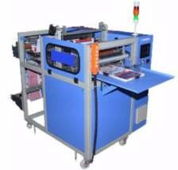
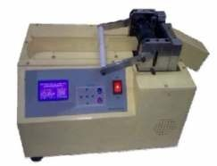
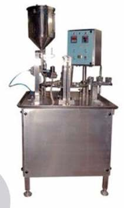
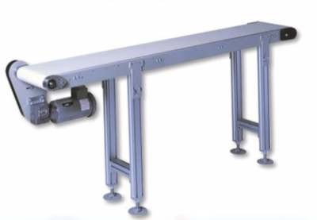
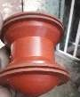

Hopper Piston Filling Machine
Rotary indexing filler for viscous products, with drip-less volumetric syringe filling.
- 60-70 bottles/min
- 2, 4, 6 or 8 heads
- SS-304 body, SS-316 contact parts
Standard machines and custom builds. Every machine is made from stainless steel and aluminium to suit your product and output.
Rotary indexing filler for viscous products, with drip-less volumetric syringe filling.

Fully automatic monoblock for 200 ml to 2000 ml PET and glass bottles, hot fill or cold fill carbonated.

Linear cup filler and sealer for 10 ml to 50 ml ready-made cups. Foil or film as required.

Fully automatic screw, crown and lug capping with a rotary indexing mechanism.

Single side labeling machine with optical gap sensing and a Siemens modem option.

Microcomputer controlled cutting for heat shrink sleeves, PVC sleeves, tapes and belts.

Six station machine: cup denesting, filling, film cutting and placing, heat sealing and ejection.

Mechanical cup and glass filling and sealing machine built around sterile packing.

Semi automatic L-sealer with shrink tunnel for gifts, confectionery, bottles and cosmetics.

Durable conveyors made to order for loading and transferring products.

Complete monoblock for water, juice and GSD lines, supplied with air conveyor, cap elevator, exit conveyor, inspection lamp and shrink tunnel.

Available with a dot-type glue dispenser or a mechanical roller gluing unit.

Heavy, rigid machine for square bottles and high-output round bottles.

Linear cup machines for curd, hot juice, lassi, jelly, jam, water, sweets and powders.

Internal and external brushing machines for 20 litre water jars, single or double head.

Weigh-based filler for oil, grease and other liquids in pails and cans.

Linear line for water, flavoured water, oil, grease and liquids. One machine handles many container types.

Automatic linear filler for glass bottles of soda and sparkling water.

Parts made to your sample from our own dies: O rings, oil seals and seal rubber.

Oil and chemical line cleaning pigs, magnetic and non-magnetic, made to sample.
Our design team modifies existing machines or builds a new one to your exact requirement.
Tell us what you need